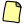
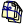

-  Crear un programa simple: Comenzar a trabajar en un programa o ejercicio rápidamente sin tener que crear archivos ni carpetas, ni definir configuraciones. Con esta opción, simplemente seleccione una plantilla para utilizar de base y comience a programar.
-  Crear un nuevo proyecto: Para los desarrollos más complejos, deberá utilizar un proyecto. Los proyectos permiten compilar múltiples fuentes, establecer perfiles con opciones avanzadas de compilación y enlazado, integrar herramientas externas, etc.
- Abrir un archivo fuente o proyecto existente:
| |